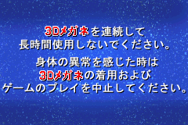

Pyuu to Fuku! Jaguar - Byoo to Deru! Megane-kun (Japan)
SRAM 256K Save Format Spec gbakit Built-In 💾 MultiBoot
Cartridge Identity
- Game Code
BPBJ(FamilyBPB)- Header Title
JAGUAR- Maker / Revision
A4/ rev0- ROM Size
- 8.0 MiB (8,388,608 B)
- Save Media
SRAM 256K- SHA-256
f4bf6c111e9b4a6ca985df3bbb10ced80e80ea3c13326755d6055477c3b0b3ff- Engine / SDK Group
comm-001(196 families)
Screenshots


Link Cable & Multiplayer Communications
This title contains detected communication capabilities: 💾 MultiBoot.
Detailed protocol specifications, SIO registers, Joybus commands, and MultiBoot sequences are documented in the Link & Multiplayer Reference.
- Single-Cart MultiBoot
- Single-Cartridge MultiBoot (Download Play) client/server handler · Thumb SWI 0x25 (
0xDF25):0x07b032,0x0881ae,0x0be256,0x10f4e8
Battery Save Format Specification
Open Full Save Format SpecDownload save-format.json
- Specification Coverage
- 4 mapped fields · 0 verified checksum(s) · Confidence: HIGH
- gbakit Built-In Support
- Built-in (BPBJ)
gbakit save verify BPBJ save.sav
gbakit save decode BPBJ save.sav
gbakit save fix BPBJ damaged.sav -o repaired.savObserved Battery Save Layout
- Fill Byte & Active Size
0x00fill · 201–201 / 32,768 B active (entropy 2.29 bits/B)- Active Offset Ranges
0x0–0xE,0x10–0x11,0x45C–0x45E,0x460–0x462,0x464–0x466,0x468–0x46A,0x46C–0x46E,0x470–0x472, +8 more (63 total)- ASCII Magic / Headers
PJAGUAR20040229- Observed Variable Regions
- 0 bytes across 0 spans: None
- Candidate Checksum/Counter Spans
- None
ROM Assets, Compression & Audio
- BIOS Compression
- LZ77 (
0x10): 1,797 streams · RLE (0x30): 0 streams - ROM Pointer Tables
- 58 tables (3 pointing to validated compressed streams)
- SDK Backup Tags
SRAM_V113,SRAM_F_V103
Asset Map (formatkit.asset-map.v1)
Download BPBJ-r0-f4bf6c111e9b4a6c.asset-map.json.gz (152,995 B (149.4 KiB)) Verified PASS · 13.53% coverage
| Metric | Bytes / Value | Entries |
|---|---|---|
| Identified | 654,799 B (639.5 KiB) (7.81%) | 1,670 |
| Mapped | 0 B (0.00%) | 0 |
| Opaque | 480,256 B (469.0 KiB) (5.73%) | 1 |
| Unknown | 7,253,553 B (6.92 MiB) (86.47%) | 1,348 |
| Total ROM Size | 8,388,608 B (8.00 MiB) | 3,019 |
| Coverage % | 13.53% | — |
| Entries w/ Code Refs | 1,801 / 3,019 (59.66%) | — |
Top Identified Formats: compress.bios-lz77 (1,015 · 552,495 B (539.5 KiB)) · gfx.gba-palette (653 · 99,616 B (97.3 KiB)) · audio.m4a-song-table (1 · 2,496 B (2.4 KiB)) · gba.rom-header (1 · 192 B)
Largest unknown Extents (Headerless / Custom Asset Candidates)
| Offset | Size | Shannon Entropy | Code Refs |
|---|---|---|---|
0x004A4A28 | 417,320 B (407.5 KiB) | 5.181 bits/B | 0 |
0x005E2300 | 386,660 B (377.6 KiB) | 4.406 bits/B | 0 |
0x0050A870 | 325,280 B (317.7 KiB) | 4.183 bits/B | 0 |
0x006D04CC | 195,380 B (190.8 KiB) | 5.942 bits/B | 0 |
0x006A5DBC | 172,612 B (168.6 KiB) | 5.981 bits/B | 0 |
gzip -dk BPBJ-r0-f4bf6c111e9b4a6c.asset-map.json.gz && gbakit map verify rom.gba BPBJ-r0-f4bf6c111e9b4a6c.asset-map.json
gbakit assets export rom.gba --asset-map BPBJ-r0-f4bf6c111e9b4a6c.asset-map.json -o out/Text, Fonts & Scene Data
- Primary Text Encoding
- Shift-JIS (uncompressed) (
9ASCII strings ·200Shift-JIS runs) - Font & VWF Indicators
- VWF Width Table 1bpp Font · BIOS SWIs: BitUnPack
0x10:29· LZ770x11/12:41· Huffman0x13:14· RLE0x14/15:42 - Scene & Packaging
11ROM pointer tables (≥32 entries,0≥200) ·7relativeu32TOCs ·311OAM metasprite hits
Hardware MMIO Subsystems
save_bus_sram_flash0x801a448,0x801a484,0x801a51c